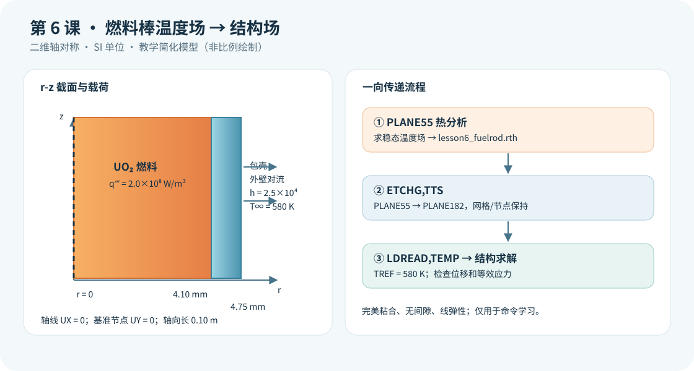

{kind=link}
验证状态：已静态检查，尚未运行 MAPDL
依据 Ansys 2026 R1 验证例 VM32 和官方 ETCHG、LDREAD、PLANE55/182 命令说明核对单元转换、温度读取与轴对称选项；已检查每条可执行命令行尾注释和 SI 单位。未运行 MAPDL，故无计算结果数值。

今日目标
先求 UO₂ 燃料与包壳的稳态温度场，再保持同一网格，将热单元改为结构单元，把 .rth 中的温度作为热膨胀载荷，查看位移和等效应力。
物理问题
统一采用 SI 单位（m、kg、s、K、W、Pa）。模型为长 0.10 m 的二维轴对称 r-z 截面：燃料半径 4.10 mm，包壳外半径 4.75 mm。燃料体积热源为 2.0×10⁸ W/m³；包壳外表面对 580 K 冷却剂对流，教学换热系数为 2.5×10⁴ W/(m²·K)。温度参考态也设为 580 K。
这是**无燃料—包壳间隙的完美粘合教学模型**。共节点界面使温度、径向位移连续；它会夸大实际未接触燃料棒的力学耦合，不应把所得应力直接当作工程评价值。燃料热膨胀、包壳温度梯度及材料膨胀系数差异共同决定结构响应。暂不考虑间隙导热、接触、内压、燃耗、辐照、塑性和蠕变。
关键命令
ET,1,PLANE55、KEYOPT,1,3,1：定义轴对称热单元。BFE,ALL,HGEN,,qvol：仅向燃料单元施加体积热源。SFL,ALL,CONV,hconv,tbulk：给包壳外壁施加对流边界。ETCHG,TTS：保留网格，将PLANE55切换成结构PLANE182；随后必须重新设置轴对称KEYOPT。SFLDELE、BFEDELE：切换物理场前清理热边界与热源。TREF,tbulk：设定热应变的零参考温度。LDREAD,TEMP,LAST,,,,lesson6_fuelrod,rth：从末个热结果集读取温度，以节点体载荷传入结构分析。D：轴线约束径向位移，仅用一个基准点消除轴向刚体平移。PLNSOL,U,SUM与PLNSOL,S,EQV：查看位移和等效应力。
分析流程
- 两块粘合面积共用节点，以
PLANE55建立轴对称热模型，求解稳态温度并生成.rth。 - 清除热载荷，使用
ETCHG,TTS转换为PLANE182，补充两种材料的EX、PRXY、ALPX，重新设置轴对称选项。 - 约束轴线
UX=0和轴线上一个节点UY=0；LDREAD导入节点温度，求解静态热弹性问题。 - 核对温度、约束、位移和应力，再开展网格和参数敏感性比较。
完整脚本
见同目录的 [example.inp](example.inp)。每条可执行 APDL 命令和参数赋值都有中文行尾注释；*VWRITE 后的格式描述符遵循 APDL 语法保持为纯格式行。
预期结果
燃料中心温度通常高于包壳外壁。若热膨胀系数不同，粘合界面附近可能出现明显热应力；应力分布取决于约束和材料参数。不能根据教学参数推断真实燃料棒的峰值应力，也不能把节点最大值直接用作收敛判据。本课没有运行 MAPDL，故不填写计算数值。
验证清单
- **热平衡**：估算发热量
qvol·πr_fuel²·rod_length，与包壳外表面对流排热量比较；若差异明显，检查面积选择和边界。 - **网格与界面**：确认燃料与包壳有共用节点，并将
esize_r缩小一半比较外壁温度、包壳中部应力。 - **温度映射**：结构阶段确认
LDREAD读取的是.rth最后热结果集，节点数量和编号未改变，且两种材料都接收温度。 - **约束与单位**：只限制必要刚体位移；核对 K、Pa、W/m³、W/(m²·K)，以及
TREF=580 K。 - **物理边界**：将 UO₂ 与包壳膨胀系数分别改变 ±20%，观察位移和界面应力的方向与灵敏度。
常见错误
ETCHG,TTS后忘记重新指定KEYOPT,1,3,1：结构场可能按平面应力分析，造成错误的环向应力。- 热网格和结构网格不同却直接使用
LDREAD：该命令按原节点映射；应保持同网格或使用经过验证的其他映射方法。 - 把整个端面
UY=0当作去刚体约束：端面轴向膨胀被额外钳制，会抬高热应力。
练习题
- 将
qvol分别设为1.0×10⁸、2.0×10⁸和3.0×10⁸ W/m³，记录燃料中心温度、包壳中部等效应力与最大径向位移，并判断是否近似线性。 - 在下一阶段加入燃料—包壳间隙及接触，比较“完美粘合”和“间隙尚未闭合”两种假设下的包壳应力，说明何时应转为非线性接触分析。
**核对依据**：[Ansys 2026 R1 的 VM32 热—结构验证算例](https://ansyshelp.ansys.com/public/Views/Secured/corp/v261/en/ans_vm/Hlp_V_VM32TXT.html)、[ETCHG 命令](https://ansyshelp.ansys.com/public/Views/Secured/corp/v252/en/ans_cmd/Hlp_C_ETCHG.html)、[LDREAD 命令](https://ansyshelp.ansys.com/public/Views/Secured/corp/v252/en/ans_cmd/Hlp_C_LDREAD.html)。本课只完成官方命令与结构的静态核对，具体求解需在有许可的 MAPDL 环境验证。
完整 example.inp（逐行中文注释）
01! 第6课：燃料温度场向包壳结构场单向传递；统一单位 m、kg、s、K、W、Pa 02/CLEAR ! 清空当前数据库，避免沿用旧模型 03/FILNAME,lesson6_fuelrod ! 设置热结果文件 lesson6_fuelrod.rth 与结构结果文件 lesson6_fuelrod.rst 04/PREP7 ! 进入前处理器 05 06! ----- 教学参数：无间隙、完美粘合的 UO2—包壳简化模型 ----- 07r_fuel=4.10e-3 ! 燃料半径，单位 m 08r_clad=4.75e-3 ! 包壳外半径，单位 m 09rod_length=0.10 ! 轴向截面长度，单位 m 10qvol=2.0e8 ! 燃料体积热源，单位 W/m^3 11tbulk=580.0 ! 冷却剂体温，单位 K 12hconv=2.5e4 ! 包壳外壁换热系数，单位 W/(m^2·K) 13esize_r=0.15e-3 ! 全局目标单元边长，单位 m 14 15! ----- 热分析：PLANE55 轴对称导热 ----- 16ET,1,PLANE55 ! 创建四节点二维热单元 17KEYOPT,1,3,1 ! 设为轴对称，X 为半径、Y 为轴向 18MP,KXX,1,3.5 ! 材料 1 UO2 教学导热率，单位 W/(m·K) 19MP,KXX,2,16.0 ! 材料 2 包壳教学导热率，单位 W/(m·K) 20RECTNG,0,r_fuel,0,rod_length ! 创建 UO2 的 r-z 半截面 21RECTNG,r_fuel,r_clad,0,rod_length ! 创建包壳的 r-z 半截面 22AGLUE,ALL ! 粘合共用界面，假设温度与位移连续 23ASEL,S,LOC,X,0,r_fuel ! 选择面积形心位于燃料径向范围的区域 24AATT,1,,1 ! 将燃料区域指定为材料 1、单元类型 1 25ASEL,S,LOC,X,r_fuel,r_clad ! 选择面积形心位于包壳径向范围的区域 26AATT,2,,1 ! 将包壳区域指定为材料 2、单元类型 1 27ALLSEL,ALL ! 恢复全部几何实体 28ESIZE,esize_r ! 设定全局网格尺寸 29AMESH,ALL ! 对两个面积划分共节点网格 30LSEL,S,LOC,X,r_clad ! 仅选择包壳外半径处的边界线 31SFL,ALL,CONV,hconv,tbulk ! 外壁施加对流边界，h 单位 W/(m^2·K) 32ALLSEL,ALL ! 恢复全部线、节点和单元 33ESEL,S,MAT,,1 ! 仅选择燃料材料的单元 34BFE,ALL,HGEN,,qvol ! 向燃料单元施加体积热源，单位 W/m^3 35ALLSEL,ALL ! 恢复全部单元参与求解 36FINISH ! 退出热分析前处理 37 38/SOLU ! 进入热求解器 39ANTYPE,STATIC ! 稳态热传导分析 40SOLVE ! 生成可供 LDREAD 读取的 .rth 温度场 41FINISH ! 退出热求解器 42 43! ----- 单向传递：保留节点与网格，将热单元切换为结构单元 ----- 44/PREP7 ! 返回前处理器转换单元类型 45ALLSEL,ALL ! 确保删除载荷和转换针对完整模型 46SFLDELE,ALL,CONV ! 清除热对流边界及相应有限元载荷 47BFEDELE,ALL,HGEN ! 清除热体积热源，避免遗留载荷干扰 48ETCHG,TTS ! 将 PLANE55 转换为 PLANE182，节点编号不变 49KEYOPT,1,3,1 ! ETCHG 重置选项后，重新设置结构轴对称行为 50MP,EX,1,2.00e11 ! UO2 教学弹性模量，单位 Pa 51MP,PRXY,1,0.30 ! UO2 教学泊松比，无量纲 52MP,ALPX,1,1.00e-5 ! UO2 教学线膨胀系数，单位 1/K 53MP,EX,2,1.00e11 ! 包壳教学弹性模量，单位 Pa 54MP,PRXY,2,0.33 ! 包壳教学泊松比，无量纲 55MP,ALPX,2,5.50e-6 ! 包壳教学线膨胀系数，单位 1/K 56NSEL,S,LOC,X,0 ! 选择 r=0 的全部轴线节点 57D,ALL,UX,0 ! 轴线径向位移为零，保持轴对称运动学 58NSEL,R,LOC,Y,0 ! 从轴线节点中保留 z=0 的基准节点 59*GET,n_anchor,NODE,0,NUM,MIN ! 取得一个基准节点编号以消除轴向刚体平移 60D,n_anchor,UY,0 ! 仅固定该节点的轴向位移，不钳制整端面 61ALLSEL,ALL ! 恢复完整网格以读取所有节点温度 62FINISH ! 退出结构分析前处理 63 64/SOLU ! 进入结构求解器 65ANTYPE,STATIC ! 指定线弹性静力结构分析 66TREF,tbulk ! 设定无热应变参考温度为冷却剂体温，单位 K 67LDREAD,TEMP,LAST,,,,lesson6_fuelrod,rth ! 从热结果末步读取全部节点温度作为结构体温载荷 68SOLVE ! 计算完美粘合假设下的热变形和热应力 69FINISH ! 退出结构求解器 70 71/POST1 ! 进入通用后处理器 72SET,LAST ! 读取最后一个结构结果集 73PLNSOL,U,SUM ! 绘制总位移云图，结果单位 m 74PLNSOL,S,EQV ! 绘制等效应力云图，结果单位 Pa 75*GET,smax,NODE,0,MAX,S,EQV ! 提取全模型节点等效应力最大值，单位 Pa 76*GET,umax,NODE,0,MAX,U,SUM ! 提取全模型节点总位移最大值，单位 m 77*CFOPEN,lesson6_results,txt ! 打开教学结果文本文件 78*VWRITE,smax,umax ! 写出应力和位移；下一行是必须保持纯净的 FORTRAN 格式行 79('Smax [Pa] = ',E16.8,', Umax [m] = ',E16.8) 80*CFCLOS ! 关闭并刷新结果文件 81FINISH ! 结束第 6 课脚本